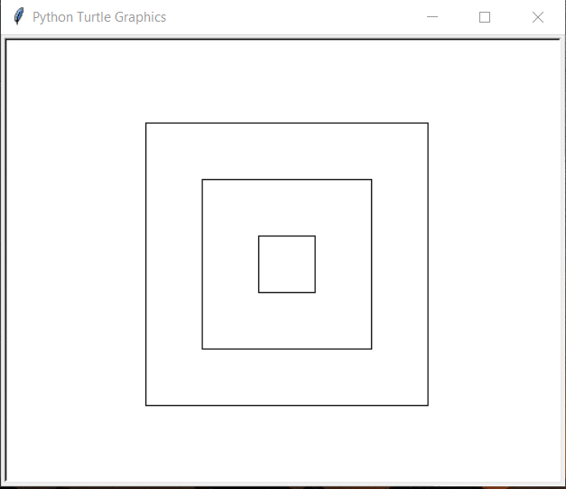

第05讲 绘制简单图形
内容
第05讲 绘制简单图形¶
Lecture05 Draw Simple Shapes
Problem¶
Use turtle module to:
open a window with width 600px and height 400px; 打开一个宽度为600像素，高度为400像素的窗口;
draw a rectangle with width 200px and height 160px; 在窗口的绘图区域的绘制一个宽200像素、高120像素的长方形。
Math Background 数学背景¶
The definition and property of a line segment, rectangle, square, and circle. 线段、矩形、正方形、圆的定义和性质。
Angles, right angle, acute angle, obtuse angle 角度、直角、锐角、钝角
Direction(Orientation) and Rotation(clockwise and anti clockwise): 方向和旋转（顺时针和逆时针）
Backward and forward, their relationship between current direction 向后和向前，它们和当前方向的关系
Prerequisites 预备知识¶
如何使用Python绘图¶
Python提供了一个专门的绘图模块：turtle，模块提供了许多与绘图有关的功能。有关这个模块的介绍可以参照网页: https://docs.python.org/3/library/turtle.html
[1]:
# import turtle # import a library named turtle 导入一个名叫turtle的库
from turtle import setup, reset, bye, pu, pd, bk, fd, left, right, st, ht
# from turtle import penup, pendown, backward, forward, showturtle, hideturtle
[2]:
# prepare a draw area with length 600px and width 400 px
# 准备一个窗口，宽度600像素，高度400像素
setup(600, 400, 0, 0)
[3]:
# pay attention to the orientation of a solid triangle in the drawing area.
# 注意绘图区内的一个实心三角形的朝向
reset()
[4]:
# penup: pick a pen and keep the pen untouched with the paper
# 挑选一只画笔并且保持画笔不接触绘图纸
pu() # penup
[5]:
# backward a certain distance 后退一定距离
bk(200)
[6]:
pd() # pen down
[7]:
fd(200) # forward 前进
[8]:
fd(100)
[9]:
# turn a given degree left to current orientation
# 在当前方向基础上往左转一定的角度
left(90)
[10]:
# forward a certain distance 前进一定距离
fd(50)
[11]:
# pen down: let the pen touch the paper and prepare to draw
# 让笔接触绘图纸准备绘图
pd()
[12]:
# turn a given degree right to current orientation
# 在当前方向基础上往右转一定的角度
right(90)
[13]:
fd(200)
[14]:
bk(100)
[15]:
# hide the turtle(pointer triangle) 隐藏乌龟（表示方向的三角形）
ht()
[16]:
# show the turtle(pointer triangle) 显示乌龟（表示方向的三角形）
st()
[17]:
# close drawing and bye 结束绘图
# bye()
Let the students to write codes to draw a rectangle with the length and with provided from input methods by completing the following programs.
Solution 编程求解¶
[18]:
#setup(600, 400, 0, 0)
reset()
pu()
pd()
fd(200)
right(90)
fd(120)
right(90)
fd(200)
right(90)
fd(120)
pd() # put down the pen, start to draw
ht() # hide the pointer.
print("Voila, I have drawn the rectangle on the screen! Did you see that?")
print("瞧，我已经在屏幕上把你要的矩形画出来了，你看见了吗？")
Voila, I have drawn the rectangle on the screen! Did you see that?
瞧，我已经在屏幕上把你要的矩形画出来了，你看见了吗？
[19]:
# bye() # close
Summary 知识点小结¶
可以通过
from a import b的形式从模块(仓库)a导入一个b，前提是a和b存在。b可以是一个方法名；
CS Tips 计算机小知识¶
All the information presented by a screen of a monitor, such as text, shapes, pictures, etc., is composed by many different tiny spots with certain colors. The number of the spots decides the resolution(the power of representing information one time) of a screen. 一个显示器屏幕上能呈现出来的一切信息，诸如文字、图形和图片等，都是有许许多多不同颜色的小点点拼出来的。这些小点点的数量决定了一块屏幕的解析率（能一次展现的信息的多少）
Assignments 作业¶
The follow code block draws a square with side length 200 right in the center of a given drawn area. Please provide correct comments for each code line explaing its role right after the “#” character. The first comment is already provided as an example. 下面的一代码块可以在一个给定的绘图区内绘制边长为200的正方形。请你在每一行代码后的“#”字符后书写一行代码注释来解释这行代码的具体作用。作为示例，第一行代码的作用已经给出。
Hint: you can put each of the code line into a seperate cell, execute them in order and cell by cell, and observe the changes in the draw area. 提示：你可以把代码块里的代码一行一行的分开放到单独的单元格中，并且依次执行他们，在绘图区观察每一个单元格执行后的效果。
[20]:
# if you restarted this page, before run this code cell,
# make sure that you executed the cell where turtle methods are imported in this page
# 如果你重启了本页面，在执行本单元格的代码前，
# 确保你已经执行了本页面中导入turtle库的诸多方法的那一个单元格
setup(500, 400, 0, 0) # prepare a draw area with size 500*400
reset() #
st() #
pu() #
bk(100) #
left(90) #
bk(100) #
pd() #
fd(200) #
right(90) #
fd(200) #
right(90) #
fd(200) #
right(90) #
fd(200) #
ht() #
[21]:
bye() # you can only close an opened draw area by executing
# this bye() method.
1). Try to write codes to draw all the three squares in a draw area like the following picture demostrates: 试着编写代码绘制如下图所示的绘图区内的三个正方形。 Requirements: 要求：
a). All the three squares are absolutely located in the middle of the draw area whose size is 600*400; 所有的三个正方形都完全位于尺寸为600×400的绘图区域的中心；
b). The side lengths of the three squares are: 250, 150, and 50, respectively. 三个正方形的边长依次为250，150，和50。
You can write as many codes as you want to complete this exercise. But just think if there should be and can be a solution which doesn’t need that many lines of codes. write your thinking down as code comments at the end of your codes. 为了完成这个作业，你可以根据自己的需要编写任意行数的代码。
2). 思考下有没有必要、以及有没有可能存在一种解决方案（办法），它并不需要写那么多行的代码，回答下面的问题：
a). If it is possible to write less codes to complete the same task (drawing the three squares) 是否可能通过更少的代码完成同样的绘制三个正方形的工作
b). If the answer for previous question is Yes, where can we improve? 如果上题的答案是肯定的，那么在哪些环节我们的代码可以改进？
c). If it is necessary to do so, why? 这样做（用更少的代码完成同样的任务）有没有必要，为什么？ 
[22]:
# Start your codes here, you can write as many codes as you want
# 从这里开始书写里的代码
# and don't forget to hide the turtle pointer in the end.
# 最后不要忘了隐藏表示乌龟的小三角形。
#
Write your thinking here (between 50 - 100 words) # 在这里写下你的思考(50-200字或单词期间) your words should answer the questions listed below: 你的文字应该能回答下列三个问题
[23]:
# 1. If it is possible to write less codes to complete the same task (drawing the three squares)
# 是否可能通过更少的代码完成同样的绘制三个正方形的工作
#
#
[24]:
# 2. If the answer for question1 is Yes, where we can improve?
# 如果上题的答案是肯定的，那么在哪些环节我们的代码可以改进？
#
#
[25]:
# 3. If it is necessary to do so, why?
# 这样做（用更少的代码完成同样的任务）有没有必要，为什么？
#
#
Use what you learned in this lecture and previous ones to draw whatever a picture(can be the combination of simple shapes) you would like, make a screenshot and send it to your teacher. Leave the codes for your drawing in the below cell. 用你在这节课上和以往的几节课上学到的知识来随心所欲地完成一次绘制（可以是各种简单图形的组合），将结果截图保存发送给你的老师。把生成这个图形的代码留在下面的单元格中。
[26]:
# Leave your codes for your drawing here
#
Write down all the names and role of methods you saw in the lecture1-4. an example
printis given below:把你在第1讲至第4讲期间见到过的所有方法的名字和它们的作用写在下面
[27]:
# 1. print: 打印一段字符在屏幕上
[28]:
# 2.
[29]:
# 3.
[30]:
# 4.
[31]:
# 5.
[32]:
# 6.
[33]:
# you can add more code cell if necessary 如果必要，你可以添加更多的代码单元格
[ ]: